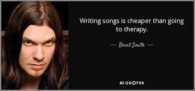
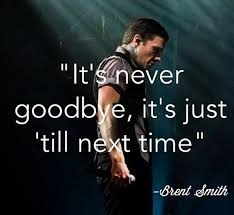

SHINEDOWN
Shinedown is an american rock band formed in 2001 in Jacksonville Florida, yes I memorized when and where they where formed, this is an amazing band, forming in the early 2000's where rock was becoming nonexistent, we are in an age where music takes a different turn from the 20th century and rock is no longer a mainstream genre of music,though modern rock has evolved from the previous years of rock music it is still not seen much in modern light

There first album leave a whisper was released in 2003 opening the album was the name of this site, fly from the inside which was one of the singles advertized on the album with 45, this album also features a cover of lynyrd skynyrd's simple man, from there shinedown spent a lot of time touring, most of what they do infact is tour, several of there albums where written on tour, currently released they have leave a whisper (2001), us and them (2005) sound of maddness (2008), somewhere in the stratosphere aka there live album (2011), amaryllis (2012) and threat to survival (2015) durring this time they have had other projects, like an EP, Itunes session, warner sound live room, studio album collection, and accustic sessions in 2014 with lead singer and guitarest brent smith and zach myres where they did accustic covers to songs, Zach Myers is the lead guitarest for shinedown, music apears to be a big part of his life, he works in and with several bands and is a father as of 2016, as someone who has seen him live I can testify he is an amazing guitarest that can play music very well Barry Kerch is the drummer, the only information i can find about him is he is married and was born in Jacksonville Florida, his hair is normally in dreadlocks that flail around when he plays (i've seen it), Eric Bass is the band's current bass/piano player, not much is out there about him from what I can find sadly, however it is said he had a passion for music, finally we have brent smith, he started shinedown in 2001 after his previous band failed, he is an amazing singer who could (likely) sing anything and I will love it! Brent had a drug and alchohol adiction for a while, though with motivation from his girlfriend and new-born son helped him gain the motivation to kick the aiction and his depresion,

this is my favorite band of all time, first and foremost reason I LOVE rock & roll it's my favorite genre of music but that's a topic for another time, the real reason for my vast love of this band has to do a lot with my uncle in fact, my uncle's job requies a lot of traveling and one time when he was in another state on work he was listining to the radio in the rental car, he had never heard the band or the song before and he loved it, he memorized enough of the chorus so he could look it up when he got back to the hotel, and it was second chance by shinedown, he loved the band, he bought all there albums and there music helped him get through a tough time in his life, fast forward to december 24th 2015, christmas eve when we got together with extended family and exchanged gifts, my uncle knew I loved rock and was listining to the genre more, so he bought me amaryllis, I opened it that christmas eve and took it home, it took me about a month to open, one day when I was cleaning my room on a saturday (i remember it fluently) I stumbled accross the unopened cd, with a shrug i put it in my CD player and the first song adreniline made me fall in love, i told my mom and she told me her brother said they where preforming live in california fairly soon, and he'd take me if i was intrested, naturally i was so i listened to the album a crap load of times before the day came, it was wensday march 9th 2016 and i never will forget that event, it was my first consert after all (you can read all about this in my memouir in Humans of DVC: by Noël Ingram's 2016 Humanities Class avalible on amazon) then i loved them even more.
with my birthday aproaching i went to target with my mother where i convinced her to purchase a copy of there newest album (both currently and at the time) threat to survival, i actually recived it on my birthday when i was at an archery competition for states, then a few months later i was with my grandfather who i did jobs around's house for money, we where at best buy so I could help him find something he wanted when i saw it, sound of maddness, the third main album shinedown has produced, i convinced him to purchase it for me and give me a pay cut for the next task i acomplished for him, those three albums would be some of my favorite things in the world, and i went on to telling my friend cameron about the band and when i finally convinced him to listen to them he was instantly hooked, he fell in love with shinedown and rock music in general, weeks ago actually when working on something my mom asked me if i would like to join her at best buy to purchase something for someone, i told her i couldn't because i was busy but if she saw a certain CD to please purchase it for me, the album i was speaking of and discribed flawlessly was leave a whisper shinedown's first album, i saw the CD at best buy prior but it was too close to christmas for me to in good nature buy anything, she returned with the CD, currently the only shinedown CD's i do not own are somewhere in the stratosphere and Us and them, as well as the digital bonus albums not standerdly released to the public, in 2016 i proceeded to see the band live again, seeing them preform 4 times before they went on tour with iron maiden in europe, the first time i saw them live was in downtown LA in a place called the mayan, the second time was at the honda center when they where on tour with five finger death punch, the third time funny enough was right next too the place i saw them the first time (no joke the next building over) and the fourth time was the house of blues in anihiem as the show before they went to europe with iron maiden, shinedown is an amazing band with songs that hold amazing meaning and value to me and other fans, it is my favorite band and they are in a great genre i truely have respect and love for this band and think they are amazing
thank you for reading and remember
